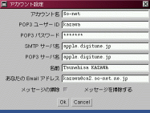

アカウントダイアログ

メールを送信したり受信したりするアカウントの設定を行うときに利用するダイアログです。
-
アカウント名
-
設定したいアカウントの名前を指定します。この名前が作成されるメールボックスファイルやインデックスファイルのファイル名に利用されますから、ファイル名に利用できない文字は使用しないようにしてください。
-
POP3 ユーザー ID
-
POP3 サーバへアクセスする時に利用する UserID を指定してください。
-
POP3 パスワード
-
POP3 サーバへアクセスするためのパスワードを指定してください。どの文字を入力しても「*」が表示されます。
-
SMTP サーバ名
-
メール送信に利用する SMTP サーバ名を指定してください。
-
POP3 サーバ名
-
メール受信に利用する POP3 サーバ名を指定してください。
-
名前
-
あなたの名前を指定してください。日本語でも大丈夫ですが、ローマ字表記の方がトラブルが少ないかもしれません。
-
あなたの Email アドレス
-
あなたの Email アドレスを指定してください。このアドレスが from ヘッダに利用されます。
-
メッセージの掃除
-
POP3 サーバからメールを受信したあと、サーバからそれらのメールを削除するかどうかを選択します。原則としては「掃除する」にしておくべきなのですが、他のメーラーでも受信したい場合などにはチェックをはずしてください。
戻る